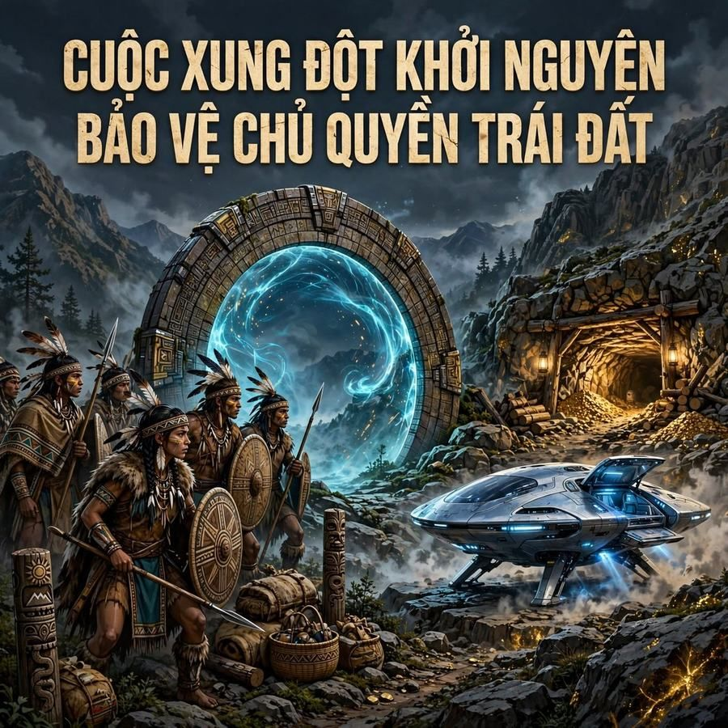
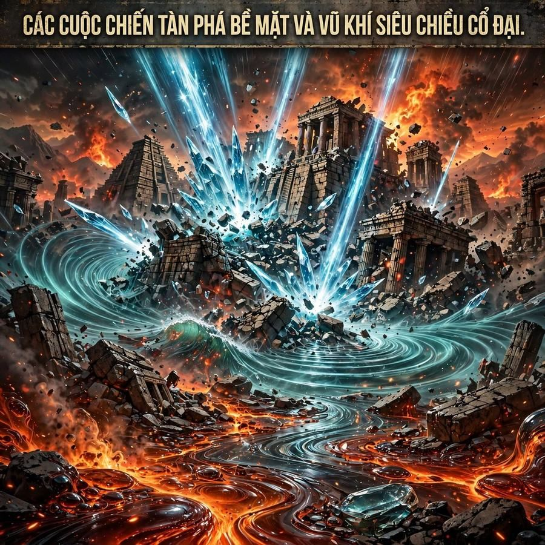
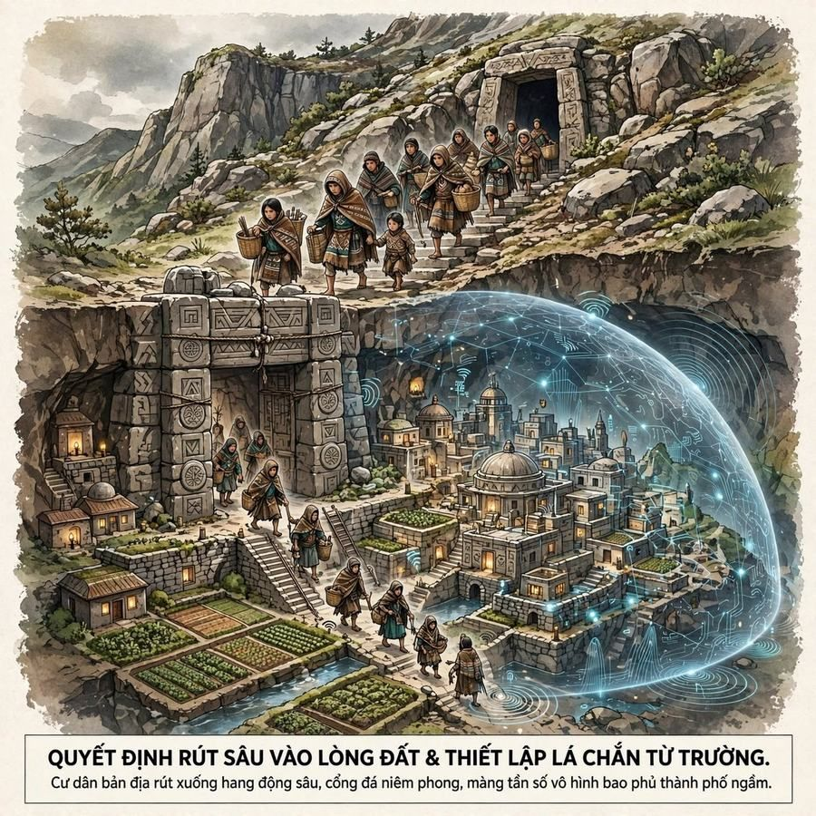
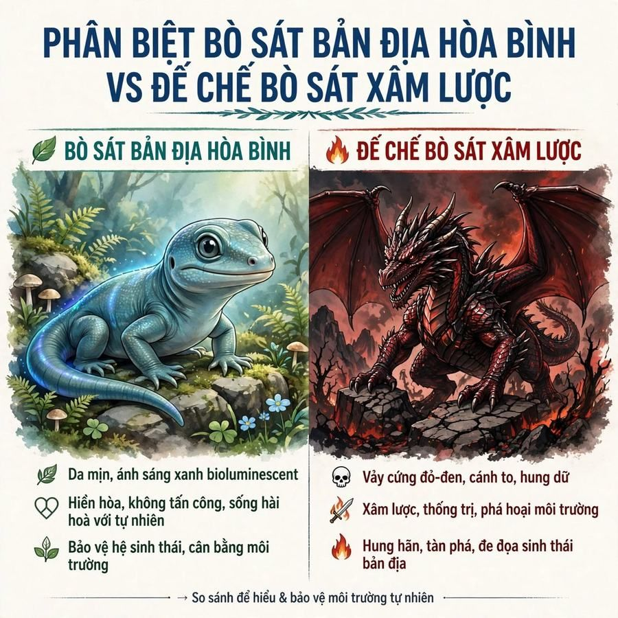

Trang chủ / Chuyên đề 4: Văn Minh Lòng Đất / Kỳ 33
Chuyên đề 4 · Kỳ 33 / 100
LỊCH SỬ CHIẾN TRANH GIỮA CÁC CHỦNG TỘC BẢN ĐỊA & CÁC THẾ LỰC NGOÀI VŨ TRỤ

Ở Kỳ 2, chúng ta đã cùng nhau khám phá nguồn gốc 10 triệu năm tiến hóa của chủng tộc Bò sát bản địa Trái Đất, thảm họa chiến tranh hạt nhân 65 triệu năm trước xóa sổ loài khủng long, cùng góc nhìn của cư dân lòng đất về dự án can thiệp di truyền gia tốc tạo ra loài người.
Tuy nhiên, lịch sử của Trái Đất dưới lòng đất không phải là một chuỗi ngày êm đềm. Khi các đoàn tàu ngoài hành tinh kéo đến Trái Đất hết đợt này đến đợt khác để khai thác tài nguyên và thực hiện các thí nghiệm sinh học, những cuộc đụng độ nảy lửa giữa Chủng tộc Bò sát bản địa và Các thế lực ngoài vũ trụ đã bùng nổ, để lại những vết sẹo địa chất sâu sắc trong ký ức thiên hà.
Tại sao chủng tộc bản địa Trái Đất lại kiên quyết chống trả các thế lực can thiệp từ bên ngoài? Các cuộc chiến tranh cổ đại bằng vũ khí năng lượng siêu cao tần đã tàn phá bề mặt hành tinh ra sao? Quyết định rút lui vĩnh viễn vào các tầng hang động sâu dưới lòng đất và thiết lập ma trận lá chắn từ trường diễn ra như thế nào? Và quan trọng nhất: Làm thế nào để phân biệt rõ ràng giữa Chủng tộc Bò sát bản địa hòa bình và Đế chế Bò sát xâm lược tiêu cực (Ciakahrr / Draco)?
Hãy cùng dấn thân vào Kỳ 3: Lịch Sử Chiến Tranh Giữa Các Chủng Tộc Bản Địa & Các Thế Lực Ngoài Vũ Trụ để giải mã những trang sử bị che giấu đằng sau các cuộc chiến thần thoại!
✦ ✦ ✦1. CUỘC XUNG ĐỘT KHỞI NGUYÊN BẢO VỆ CHỦ QUYỀN TRÁI ĐẤT
Khi các đoàn tàu ngoài hành tinh (như phe Anunnaki / Illojim) đặt chân xuống Trái Đất cách đây vài triệu năm, họ coi Trái Đất như một "hành tinh vô chủ" hoặc một phòng thí nghiệm tự do để khai thác vàng và tiến hành gieo mầm di truyền.
A. Sự Phẫn Nộ Của Cư Dân Bản Địa
- Chủ Nhân Đã Tồn Tại Hàng Triệu Năm: Chủng tộc Bò sát bản địa — những sinh mệnh đã làm chủ Trái Đất suốt 10 triệu năm — xem việc các lực lượng ngoài vũ trụ tự ý hạ cánh, đào mỏ và lai tạo các dòng sinh vật mới là sự xâm phạm trắng trợn vào chủ quyền hành tinh.
- Tự Vệ Bảo VỆ Lãnh Thổ Nguyên Thủy: Chủng tộc bản địa đã triển khai các lực lượng phòng vệ, tấn công vào các trạm khai thác và các đại đô thị thần quyền do các thế lực ngoài vũ trụ dựng lên trên bề mặt.
B. Sự Tranh Chấp Các Cổng Sao Địa Từ (Stargates)
- Chiếm Đạt Tọa Độ Năng Lượng: Mâu thuẫn chính không chỉ dừng lại ở các hầm mỏ kim loại, mà tập trung vào việc kiểm soát các Cổng Sao tự nhiên nằm trên các chấn điểm kinh mạch Trái Đất (Ley Line Nodes). Cả hai phe đều khao khát nắm giữ các cổng này để điều biến từ trường và làm chủ tuyến du hành liên sao.

2. CÁC CUỘC CHIẾN TÀN PHÁ BỀ MẶT VÀ VŨ KHÍ SIÊU CHIỀU CỔ ĐẠI
Các cuộc xung đột giữa chủng tộc bản địa và các thế lực xâm lược ngoài vũ trụ không diễn ra bằng các loại vũ khí thô tháp, mà sử dụng các công nghệ hạ nguyên tử và năng lượng sóng vô hướng hủy diệt.
A. Vũ Khí Năng Lượng Tinh Thể & Sóng Tần Số Hạ Âm
- Bốc Hơi Thành Phố Trong Chớp Mắt: Các cuộc đụng độ đã chứng kiến việc sử dụng các chùm tia năng lượng thạch anh hội tụ và sóng hạ âm (Infrasound Pulse) có khả năng làm sụp đổ ma trận nguyên tử của đối phương, biến các pháo đài đá thành lớp thủy tinh nung chảy.
- Tàn Phá Khí Quyển Bề Mặt: Hậu quả của các cuộc chiến này đã làm méo mó dải khí quyển bề mặt Trái Đất, gây ra các trận động đất đại địa chất và làm biến dạng dải khí hậu nguyên thủy của hành tinh.
B. Vết Sẹo Cổ Đại Trong Các Thần Thoại
- Bản Ghi Chép Lịch Sử Bị Mã Hóa: Những cuộc đại chiến bằng đĩa bay và pháo năng lượng này đã đi vào tâm trí của loài người sơ khai dưới dạng các trận chiến thần thoại giữa "Chư Thiên và Asura" hay các trận chiến bầu trời được ghi lại trong các thi tập cổ Lưỡng Hà và Ấn Độ!

3. QUYẾT ĐỊNH RÚT SÂU VÀO LÒNG ĐẤT & SỰ THIẾT LẬP LÁ CHẮN TỪ TRƯỜNG
Nhận thấy bề mặt Trái Đất trở nên quá hỗn loạn, độc hại và liên tục bị dòm ngó bởi các thế lực ngoài vũ trụ, chủng tộc bản địa đã đưa ra một quyết định chiến lược lịch sử.
A. Rút Lui Vĩnh Viễn Xuống Tầng Vỏ Trái Đất
- Niêm Phong Các Lối Vào Bề Mặt: Chủng tộc bản địa chủ động rút toàn bộ bộ máy văn minh, cơ sở năng lượng và quần thể cư dân xuống sinh sống sâu bên trong vỏ Trái Đất — nơi có môi trường tự nhiên được bảo vệ hoàn hảo bởi lớp đá dày hàng ngàn kilômét.
- Đóng Cửa Các Hang Động Nối Bề Mặt: Họ ngụy trang và niêm phong các lối vào hang động chính trên bề mặt bằng các tường từ trường tàng hình, ngăn không cho con người bề mặt lẫn các phi thuyền ngoài hành tinh vô tình xâm nhập.
B. Thiết Lập Lớp Màng Phản Xạ Tần Số (Frequency Shielding)
- Vô Hình Trước Các Thiết Bị Quét Lượng Tử: Họ xây dựng các trạm phát sóng tần số vô hướng xung quanh vùng lãnh thổ ngầm của mình. Lớp màng này làm nhiễu loạn các thiết bị quét radar và sóng lượng tử của các thế lực xâm lược, giúp các thành phố ngầm hoàn toàn "vô hình" và an toàn suốt hàng ngàn năm qua.

4. PHÂN BIỆT RÕ RÀNG: BÒ SÁT BẢN ĐỊA HOÀ BÌNH VS ĐẾ CHẾ BÒ SÁT XÂM LƯỢC (CIAKAHRR)
Một trong những điểm nhầm lẫn lớn nhất của cộng đồng nghiên cứu tâm linh chính là việc đánh đồng tất cả các chủng tộc Bò sát thành một phe tiêu cực. Sự thật hoàn toàn khác biệt!
A. Đế Chế Bò Sát Xâm Lược (Ciakahrr / Draco — Tiêu Cực)
- Xuất Thân Ngoài Vũ Trụ (Chòm Sao Thất Long / Draco): Đây là lực lượng xâm lược tiêu cực đến từ ngoài dải Ngân Hà. Họ sở hữu hình thái Bò sát khổng lồ có cánh (Regals), mang tư tưởng thống trị độc đoán, chuyên đi chinh phạt các hệ sao, thao túng tâm trí và thu hoạch năng lượng sợ hãi (Loosh).
B. Chủng Tộc Bò Sát Bản Địa Trái Đất (Agarthan Reptilians — Hòa Bình & Trung Lập)
- Sinh Ra Từ Hành Tinh Gaia: Đây là chủng tộc tiến hóa tự nhiên từ Trái Đất. Họ không có cánh, da vảy mịn, tồn tại ở dải mật độ cao hơn.
- Triết Lý Bảo Tồn Gaia: Họ mang triết lý tôn trọng Trái Đất, sống hòa hợp với mạng lưới Agartha, không can thiệp vào sự phát triển của con người nhưng kiên quyết bảo vệ lòng đất khỏi sự phá hủy. Họ coi Trái Đất là ngôi nhà chung thiêng liêng mà họ có trách nhiệm giữ gìn.

5. LỜI KẾT KỲ 3: BÀI HỌC VỀ SỰ THẤU HIỂU VÀ PHÂN BIỆT BẢN CHẤT
Kỳ 3 của chuyên đề 4 khép lại mang đến bài học nhận thức quan trọng:
- Không Đánh Đồng Dựa Trên Hình Thái Vỏ Bọc: Trong Đa Vũ trụ, hình thái sinh học (Dạng người, Bò sát, Thực vật, Năng lượng) không quyết định bản chất thiện hay ác của một sinh mệnh. Sự thật nằm ở Tần số Dao động Nhận thức và Tình Yêu Thương từ Luân Xa Tim của sinh mệnh đó!
- Tôn Trọng Mọi Dạng Sống Trên Gaia: Khi chúng ta học được cách phân biệt rõ ràng và rũ bỏ sự sợ hãi phiến diện, chúng ta sẽ mở rộng tâm trí để sẵn sàng hòa nhập vào trật tự giao thoa đa văn minh của Đa Vũ trụ!